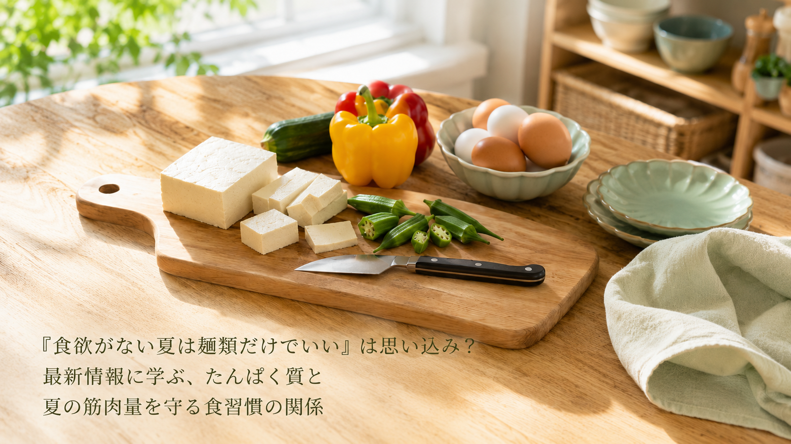

「食欲がない夏は麺類だけでいい」は思い込み？最新情報に学ぶ、たんぱく質と夏の筋肉量を守る食習慣の関係
暑さで食欲がわかず、そうめんや冷やし中華などの麺類だけで食事を済ませてしまう——そんな夏の食卓に心当たりのある方も多いのではないでしょうか。2026年7月、愛知県豊田市の「たいや内科クリニック」が、管理栄養士による健康料理教室「夏でも筋肉を落とさないごはん」の開催を発表し、話題になりました。今回はこの取り組みをきっかけに、中高年の方にも役立つ、夏の食習慣との付き合い方をご紹介します。

料理教室が伝える3つのポイント
- 食欲が落ちる夏こそ「たんぱく質」の摂取が健康維持の鍵になると位置づけられている。冷たい麺類など偏った食事が続くと、気づかないうちにたんぱく質不足に陥り、筋肉量の低下につながる可能性があると説明されています。
- 管理栄養士が、家庭でも手軽に再現できる高たんぱく料理の工夫を教える形式で企画されている。特別な材料や難しい調理技術がなくても、日々の食卓に取り入れやすい内容が意識されているとのことです。
- 糖尿病や生活習慣病を専門とするクリニックが、治療だけでなく地域住民への予防・健康増進の一環として開催している取り組み。料理教室という形で、楽しみながら食習慣を見直すきっかけを提供しているとされています。
中高年の私たちが日常で意識したいこと
この料理教室が伝えているのは、「食欲がない夏は麺類だけで済ませても仕方がない」ということではなく、少しの工夫でたんぱく質不足を防げるという視点です。次のような一般的に知られている工夫が、夏の食習慣を見直すきっかけになるかもしれません。
- 麺類だけで済ませず、卵・豆腐・肉や魚など、たんぱく質を含む一品をプラスしてみる
- 冷たい料理が続きやすい時期は、薬味や酸味を効かせるなど食べやすい味付けを工夫してみる
- 一度にたくさん摂ろうとせず、毎食少しずつたんぱく質を意識してみる
※上記は一般的な食習慣としてよく紹介される内容であり、特定の症状の改善や筋肉量の変化を保証するものではありません。
本記事は、たいや内科クリニック（愛知県豊田市、院長：加藤大也）が2026年7月11日に発表したプレスリリース「【8/19開催】夏バテ予防の新提案！内科クリニックが『夏でも筋肉を落とさないごはん』料理教室を開催」の内容を要約・紹介したものです。詳しい内容は出典元をご確認ください。
出典：たいや内科クリニック プレスリリース（アットプレス配信、2026年7月11日）
出典：たいや内科クリニック プレスリリース（アットプレス配信、2026年7月11日）
本記事は健康に関する一般的な情報提供を目的としたものであり、医学的な診断・治療・予防を目的としたものではありません。記載内容は出典元の見解の要約であり、当社（株式会社BISII）独自の見解や、当社が販売する製品の効果を示すものではありません。気になる症状がある場合は、医療機関へご相談ください。
当社では、日々のコンディショニングをサポートする空間電位ケア機器「DENBA Health」をご紹介しています。
DENBA Healthについて見る最終更新日：2026年7月16日